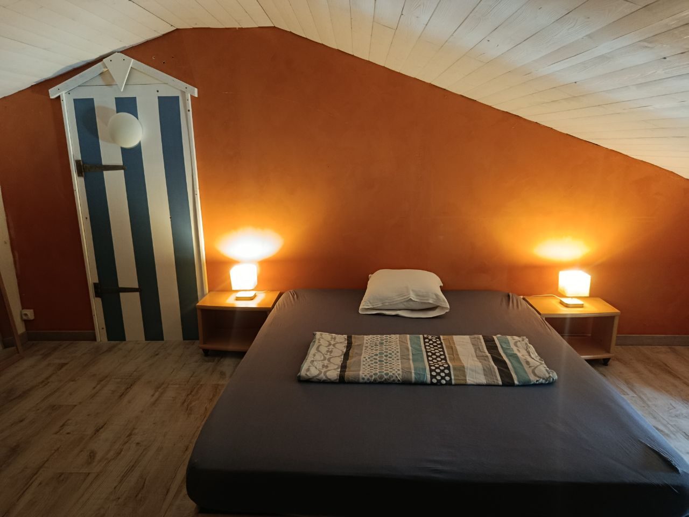
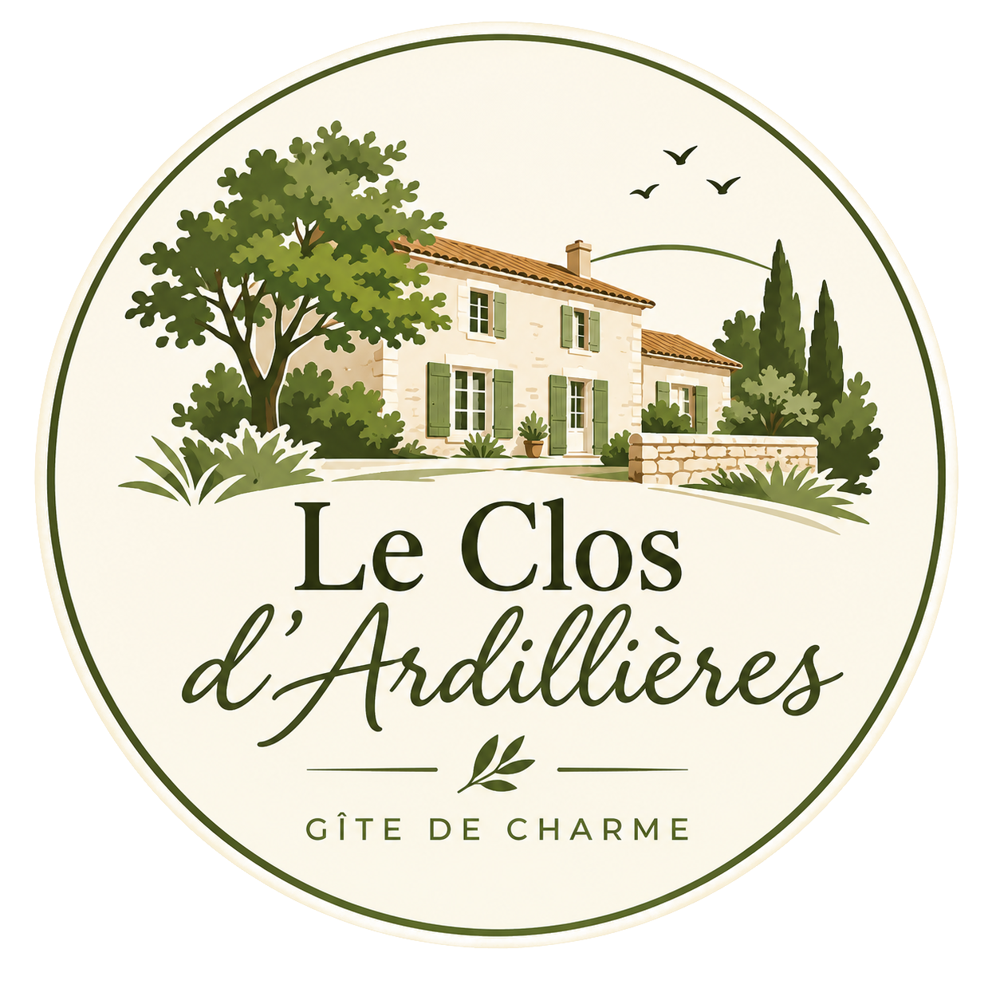
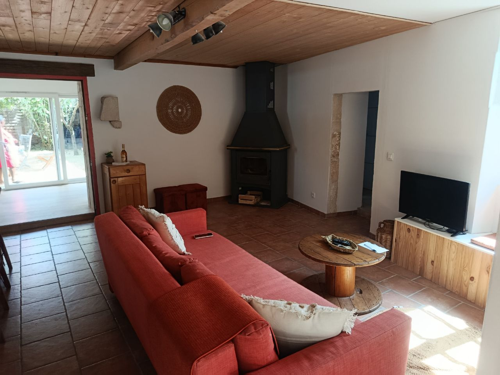
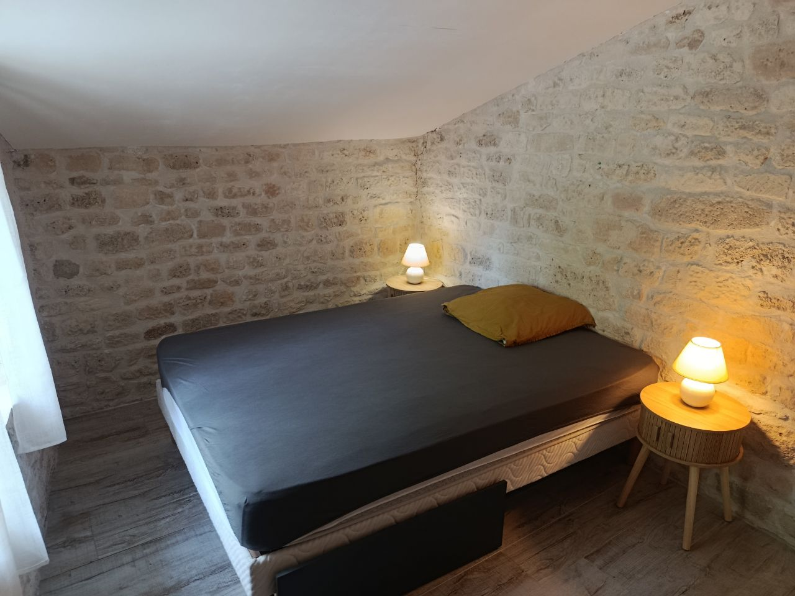
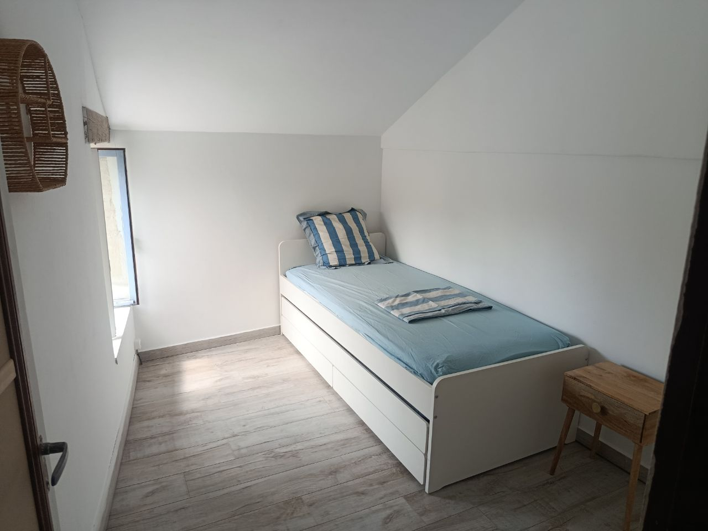
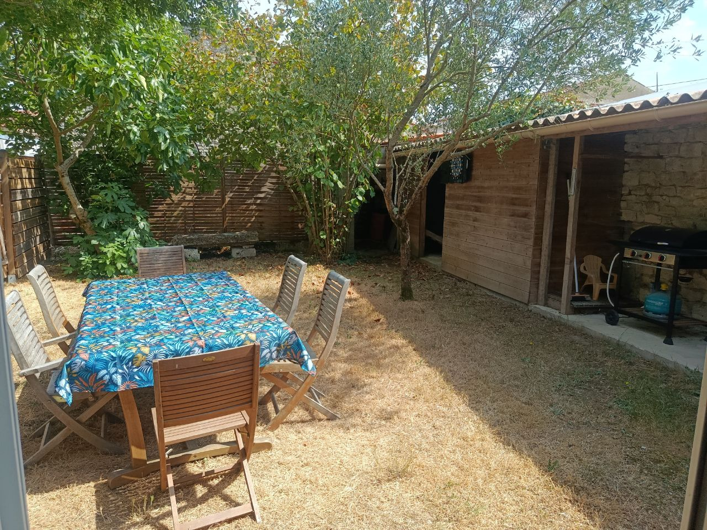

Chambre Île de Ré
Une chambre douce et lumineuse, pensée dans un esprit bord de mer.
Lit 160x200cm modulable en 2 80x200

Actuellement fermé, le gite réouvira ses portes en Avril 2027.
Charente-Maritime · Ardillières
Un gîte chaleureux au calme de la campagne, entre Rochefort et La Rochelle.
Bienvenue
Bienvenue au Clos d'Ardillières, une maison de vacances pleine de charme située dans un environnement paisible de Charente-Maritime.
Le gîte accueille jusqu'à 6 personnes et constitue un point de départ idéal pour découvrir Rochefort, les plages de Châtelaillon, La Rochelle et les trésors de la côte charentaise.
Les nuits

Une chambre douce et lumineuse, pensée dans un esprit bord de mer.
Lit 160x200cm modulable en 2 80x200
Une ambiance chaleureuse inspirée du littoral charentais.
Lit 140x190 cm
Une chambre pratique pour compléter l'accueil familial du gîte.
2 couchages en lit gigogne 90x200 cm
Dehors
Le jardin clos et arboré d'environ 60 m² offre un espace agréable pour déjeuner, prendre un verre ou simplement profiter du calme.
Une table pour 6 personnes et un barbecue à gaz sont à disposition.
Découvrir la région
Entre campagne, patrimoine, plages et découvertes en famille.
Séjour
+ 60 € de ménage en fin de séjour.
Le linge de lit peut être proposé en option. Les modalités exactes et les disponibilités sont à confirmer lors de la réservation.
Demander une disponibilitéVotre séjour
Contactez-nous pour confirmer les disponibilités et préparer votre séjour au Clos d'Ardillières.